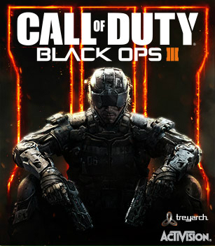

- Platformers: Games focused on running, timing, and jumping across gaps or obstacles.
- Shooters: Games centered on using ranged weapons. If you see through the character's eyes, it's a First-Person Shooter (FPS); if you see the character from behind, it's a Third-Person Shooter (TPS).
- Fighting Games: Close-range, one-on-one martial arts combat on a closed stage.

